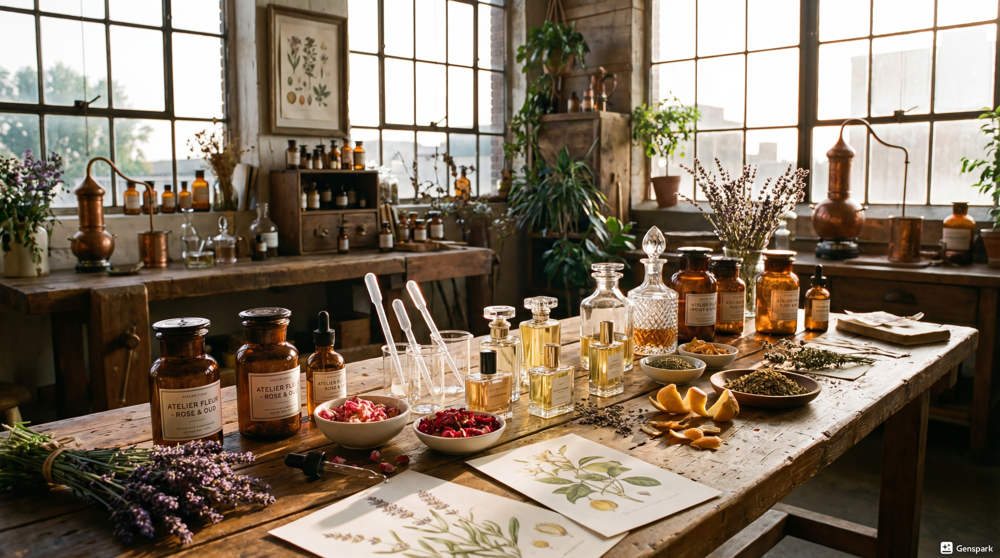

12種コース
初めての方にもおすすめのスタンダードコース。香りの基本を楽しみながら、自分だけの一本を作ることができます。
デザインコンセプト
本サービスは、オリジナル香水を制作できる体験型ワークショップの予約サイトです。
ユーザーが香りを選び、自分だけの香水を作る特別な体験を提供するサービスであり、
Webサイトでは体験の魅力を伝えると同時に、スムーズに予約できる導線を重視します。
そのためデザインでは、ユーザーに上質さ・安心感・体験への期待感を感じてもらえることを目指します。
また、体験型サービスとしての魅力を視覚的に伝えながら、迷わず予約に進める分かりやすいUI設計を両立させます。
ターゲット
20〜30代の女性を中心とした、体験型コンテンツやおしゃれなライフスタイルに関心の高いユーザー。
SNSで共有できる特別な体験や、自分だけのオリジナルアイテムに価値を感じる層を想定しています。
デザインキーワード
1. 上質感（Luxury）
香水は「特別感」や「美しさ」を感じさせる商品であるため、洗練されたデザインによってサービス全体の価値を高めます。
落ち着いた配色や余白を活かしたレイアウトにより、上品で特別感のある世界観を表現します。
2. シンプル（Simple）
予約サイトとして、ユーザーが必要な情報をすぐに理解し、迷わず予約できることを重視します。
情報を整理した分かりやすいデザインにすることで、使いやすさと予約導線の明確化を図ります。
3. 温かみ（Warmth）
香水作り体験は、商品を購入するだけでなく、思い出として残る体験価値を提供するサービスです。
そのため、親しみや安心感を持てる柔らかな印象を取り入れ、体験への期待感を高めます。
| 色の種類 | カラーコード | 色見本 | 使用場面 |
|---|---|---|---|
| メインカラー | #1A1A1A | ヘッダー、見出し、主要ボタン | |
| サブカラー | #F3EDE6 | セクション背景、カード背景、区切り | |
| アクセントカラー | #C8A96A | CTAボタン、リンク、強調表示 | |
| 背景色 | #FAFAFA | ページ背景 | |
| テキスト色 | #222222 | 本文テキスト | |
| テキスト色（薄） | #777777 | 補助テキスト、注釈 |
カラーパレット選定理由
本サービスのデザインコンセプトである「上質感」「シンプル」「温かみ」を表現するため、 モノトーンを基調とした落ち着いた配色に、ベージュとゴールドを組み合わせたカラーパレットを採用した。
メインカラーのブラック系は高級感・信頼感・洗練された印象を与える色であり、 香水ブランドの世界観を表現する基調色として使用する。
サブカラーのベージュ系は温かみや安心感を与える色であり、 体験型サービスとしての親しみやすさを表現するため背景色やコンテンツエリアに使用する。
アクセントカラーのゴールド系は特別感・華やかさ・魅力を表現する色であり、 予約ボタンや強調要素に使用することで視線誘導を促す役割を持つ。
背景色とテキストカラーは可読性を重視し、ユーザーが情報を読みやすく理解しやすい シンプルで視認性の高い配色とした。
| 要素 | フォント名 | サイズ | 太さ | 行間 | 用途 |
|---|---|---|---|---|---|
| h1（大見出し） | Inter | 32px | 800 | 1.3 | ページタイトル、キービジュアル見出し |
| h2（中見出し） | Inter | 24px | 700 | 1.4 | セクション見出し |
| h3（小見出し） | Inter | 18px | 600 | 1.5 | 小見出し、カードタイトル |
| 本文 | Noto Sans JP | 14px | 400 | 1.8 | 本文、説明文、通常テキスト |
| キャプション | Noto Sans JP | 12px | 400 | 1.6 | 画像説明、補足情報、注釈 |
| ボタン | Inter | 14px | 600 | — | CTAボタン、操作ラベル |
タイポグラフィ設計方針
本サービスでは、デザインコンセプトである「上質感」「シンプル」「温かみ」を 文字表現においても一貫して伝えるため、見出しと本文で役割を分けたフォント設計を行う。
見出しには Inter を採用し、洗練された印象と現代的な上質感を表現する。 英字フォントならではのシャープさを活かすことで、香水ブランドらしい スタイリッシュな世界観を演出する。
本文には Noto Sans JP を採用し、日本語における高い可読性と安定した視認性を確保する。 予約導線やサービス説明など、ユーザーが正確に情報を理解する必要がある場面において、 読みやすく信頼感のある文字設計を重視する。
また、見出しはやや太めのウェイトと控えめな文字間で上質感を表現し、 本文は広めの行間によって読みやすさとやわらかい印象を両立する。 キャプションやボタンについても情報の優先度に応じたサイズ・太さを設定し、 画面全体の情報設計が明確に伝わるタイポグラフィルールとする。
letter-spacing 推奨値
h1：-0.02em / h2：-0.01em / h3：0em / 本文：0.02em / キャプション：0.03em / ボタン：0.04em
ボタン設計方針
ユーザーが操作の優先度を直感的に理解できるように、 プライマリ・セカンダリ・デンジャーの3種類のボタンスタイルを定義する。
プライマリボタンは予約などの主要操作に使用し、 セカンダリボタンは補助操作、 デンジャーボタンは削除などの危険操作に使用する。
/* --- Button Base --- */
.btn {
display: inline-flex;
align-items: center;
justify-content: center;
min-width: 160px;
height: 48px;
padding: 0 28px;
border-radius: 6px;
border: 1px solid transparent;
font-family: 'Inter', sans-serif;
font-size: 14px;
font-weight: 600;
letter-spacing: 0.04em;
cursor: pointer;
transition: all 0.2s ease;
}
/* --- Primary Button --- */
.btn-primary {
background: #1A1A1A;
color: #FFFFFF;
border-color: #1A1A1A;
}
.btn-primary:hover {
background: #333333;
border-color: #333333;
}
/* --- Secondary Button --- */
.btn-secondary {
background: #FFFFFF;
color: #1A1A1A;
border: 1px solid #999999;
}
.btn-secondary:hover {
background: #F5F5F5;
border-color: #777777;
transform: translateY(-1px);
box-shadow: 0 4px 10px rgba(0,0,0,0.08);
}
/* --- Danger Button --- */
.btn-danger {
background: #B23A3A;
color: #FFFFFF;
border-color: #B23A3A;
}
.btn-danger:hover {
background: #922F2F;
border-color: #922F2F;
}
フォーム設計方針
フォーム要素はシンプルで視認性の高いデザインとし、 入力時のフォーカス状態やエラー状態が明確に分かるよう設計する。
入力内容に不備があります。確認してください。
コンポーネント設計方針
カード・テーブル・アラートは、サービス全体の上質感と可読性を両立するため、 モノトーンを基調としたシンプルなデザインで統一する。
カードは情報を整理して視覚的に伝えるために使用し、 テーブルは比較しやすさを重視したストライプ表示を採用する。 アラートは状態を明確に伝えるため、情報・成功・警告・エラーの4種類を定義する。

初めての方にもおすすめのスタンダードコース。香りの基本を楽しみながら、自分だけの一本を作ることができます。
より多くの香りから選べるプレミアム体験。こだわりの香水作りをじっくり楽しみたい方に適したコースです。
| コース名 | 香り数 | 所要時間 | 料金 |
|---|---|---|---|
| 12種コース | 12種類 | 約45分 | ¥4,500 |
| 20種コース | 20種類 | 約60分 | ¥6,000 |
| ペア体験コース | 20種類 | 約75分 | ¥11,000 |
レイアウト設計方針
本サービスでは、デザインコンセプトである「上質感」「シンプル」「温かみ」を画面設計においても一貫して表現するため、 余白を活かした整然としたレイアウトルールを設定する。
情報を過度に詰め込まず、視線の流れが自然に生まれる構成とすることで、 体験型サービスにふさわしい上品さと、予約サイトとしての分かりやすさを両立する。
1. コンテンツ幅
・全体コンテンツ最大幅：1200px
・本文エリア推奨幅：760px〜800px
・左右余白：PC 40px / タブレット 24px / スマートフォン 16px
コンテンツ最大幅を1200pxに設定することで、PC画面でも横に広がりすぎない上品な余白を確保する。 また、本文エリアは760px〜800px程度に抑えることで、長文でも視線移動が大きくなりすぎず、読みやすさを維持する。
2. グリッドシステム
・PC：12カラム
・タブレット：8カラム
・スマートフォン：4カラム
・ガター幅：24px（PC・タブレット） / 16px（スマートフォン）
PCでは12カラムを基準とすることで、画像・テキスト・カードなどを柔軟に配置できる構成とする。 タブレット・スマートフォンではカラム数を減らし、画面幅に応じて自然に情報を再配置できるレスポンシブ設計とする。
3. セクション間の余白
・PC：80px
・タブレット：64px
・スマートフォン：48px
セクション間には十分な余白を確保し、情報ブロック同士を明確に区切ることで、視認性と上質感を高める。 特に体験型サービスでは、ゆとりを感じるレイアウトがブランドイメージの向上にもつながる。
4. 要素間の余白
・見出しと本文：16px
・主要要素同士の基本余白：24px
・小要素間（ラベル、補助情報など）：8px〜12px
・カード内部余白：24px
要素間の余白に明確なルールを持たせることで、情報の階層が伝わりやすくなり、画面全体に統一感が生まれる。 小要素は詰めすぎず、主要要素には十分な余白を持たせることで、シンプルで見やすい構成を実現する。
5. 角丸
・基本角丸：6px
・カード / フォーム / ボタン：6px
・小さなUI要素（バッジ等）：4px
角丸は控えめな数値に統一し、柔らかさを持たせながらも、過度にカジュアルにならないバランスを保つ。 これにより、温かみを感じさせつつ、香水ブランドらしい洗練された印象を維持する。
6. シャドウ
・通常時：box-shadow: 0 4px 12px rgba(0, 0, 0, 0.06);
・ホバー時：box-shadow: 0 8px 20px rgba(0, 0, 0, 0.08);
シャドウは強くしすぎず、わずかな立体感を与える程度に抑えることで、上質で落ち着いたUIを実現する。 ホバー時のみ少し強めることで、操作可能な要素であることを自然に伝える。
7. ブレークポイント
・PC：1025px以上
・タブレット：769px〜1024px
・スマートフォン：768px以下
デバイスごとの画面幅に応じてレイアウトを最適化し、どの閲覧環境でも操作しやすく読みやすいUIを維持する。 特にスマートフォンでは余白と要素サイズを再調整し、予約導線を優先した画面設計とする。
総括
本レイアウトルールは、ブランドとしての上質感を保ちながら、ユーザーが迷わず情報を理解し、スムーズに予約へ進めることを目的としている。 コンテンツ幅・余白・角丸・シャドウ・レスポンシブ設計に一貫した基準を設けることで、サイト全体に統一感と信頼感を持たせる。